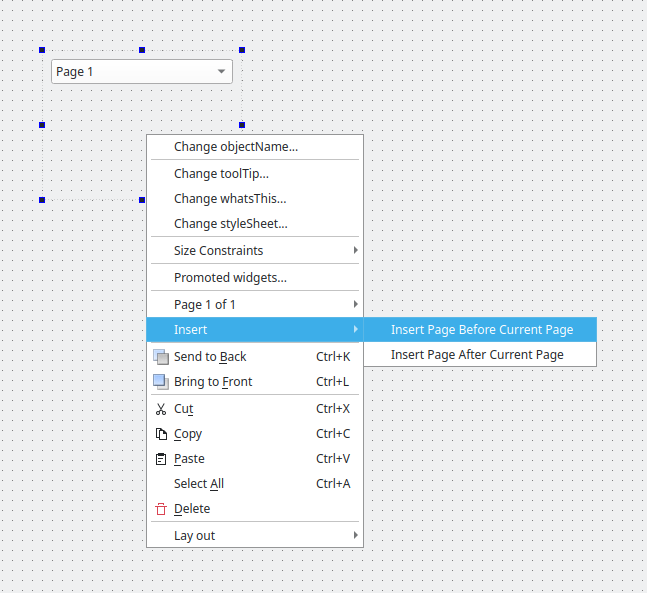

QDesignerContainerExtension Class
The QDesignerContainerExtension class allows you to add pages to a custom multi-page container in Qt Designer's workspace. More...
| Header: | #include <QDesignerContainerExtension> |
| CMake: | find_package(Qt6 REQUIRED COMPONENTS Designer) target_link_libraries(mytarget PRIVATE Qt6::Designer) |
| qmake: | QT += designer |
Public Functions
| virtual | ~QDesignerContainerExtension() |
| virtual void | addWidget(QWidget *page) = 0 |
| virtual bool | canAddWidget() const = 0 |
| virtual bool | canRemove(int index) const = 0 |
| virtual int | count() const = 0 |
| virtual int | currentIndex() const = 0 |
| virtual void | insertWidget(int index, QWidget *page) = 0 |
| virtual void | remove(int index) = 0 |
| virtual void | setCurrentIndex(int index) = 0 |
| virtual QWidget * | widget(int index) const = 0 |
Detailed Description

QDesignerContainerExtension provide an interface for creating custom container extensions. A container extension consists of a collection of functions that Qt Designer needs to manage a multi-page container plugin, and a list of the container's pages.
Warning: This is not an extension for container plugins in general, only custom multi-page containers.
To create a container extension, your extension class must inherit from both QObject and QDesignerContainerExtension. For example:
class MyContainerExtension : public QObject, public QDesignerContainerExtension { Q_OBJECT Q_INTERFACES(QDesignerContainerExtension) public: MyContainerExtension(MyCustomWidget *widget, QObject *parent = 0); int count() const; QWidget *widget(int index) const; int currentIndex() const; void setCurrentIndex(int index); void addWidget(QWidget *widget); void insertWidget(int index, QWidget *widget); void remove(int index); private: MyCustomWidget *myWidget; };
Since we are implementing an interface, we must ensure that it's made known to the meta object system using the Q_INTERFACES() macro. This enables Qt Designer to use the qobject_cast() function to query for supported interfaces using nothing but a QObject pointer.
You must reimplement several functions to enable Qt Designer to manage a custom multi-page container widget: Qt Designer uses count() to keep track of the number pages in your container, widget() to return the page at a given index in the list of the container's pages, and currentIndex() to return the list index of the selected page. Qt Designer uses the addWidget() function to add a given page to the container, expecting it to be appended to the list of pages, while it expects the insertWidget() function to add a given page to the container by inserting it at a given index.
In Qt Designer the extensions are not created until they are required. For that reason you must also create a QExtensionFactory, i.e a class that is able to make an instance of your extension, and register it using Qt Designer's extension manager.
When a container extension is required, Qt Designer's extension manager will run through all its registered factories calling QExtensionFactory::createExtension() for each until the first one that is able to create a container extension, is found. This factory will then create the extension for the plugin.
There are four available types of extensions in Qt Designer: QDesignerContainerExtension , QDesignerMemberSheetExtension, QDesignerPropertySheetExtension and QDesignerTaskMenuExtension. Qt Designer's behavior is the same whether the requested extension is associated with a multi page container, a member sheet, a property sheet or a task menu.
The QExtensionFactory class provides a standard extension factory, and can also be used as an interface for custom extension factories. You can either create a new QExtensionFactory and reimplement the QExtensionFactory::createExtension() function. For example:
QObject *ANewExtensionFactory::createExtension(QObject *object, const QString &iid, QObject *parent) const { if (iid != Q_TYPEID(QDesignerContainerExtension)) return 0; if (MyCustomWidget *widget = qobject_cast<MyCustomWidget*> (object)) return new MyContainerExtension(widget, parent); return 0; }
Or you can use an existing factory, expanding the QExtensionFactory::createExtension() function to make the factory able to create a container extension as well. For example:
QObject *AGeneralExtensionFactory::createExtension(QObject *object, const QString &iid, QObject *parent) const { MyCustomWidget *widget = qobject_cast<MyCustomWidget*>(object); if (widget && (iid == Q_TYPEID(QDesignerTaskMenuExtension))) { return new MyTaskMenuExtension(widget, parent); } else if (widget && (iid == Q_TYPEID(QDesignerContainerExtension))) { return new MyContainerExtension(widget, parent); } else { return 0; } }
For a complete example using the QDesignerContainerExtension class, see the Container Extension example. The example shows how to create a custom multi-page plugin for Qt Designer.
See also QExtensionFactory, QExtensionManager, and Creating Custom Widget Extensions.
Member Function Documentation
[virtual noexcept] QDesignerContainerExtension::~QDesignerContainerExtension()
Destroys the extension.
[pure virtual] void QDesignerContainerExtension::addWidget(QWidget *page)
Adds the given page to the container by appending it to the extension's list of pages.
See also insertWidget(), remove(), and widget().
[pure virtual] bool QDesignerContainerExtension::canAddWidget() const
Returns whether a widget can be added. This determines whether the context menu options to add or insert pages are enabled.
This should return false for containers that have a single, fixed page, for example QScrollArea or QDockWidget.
See also addWidget() and canRemove().
[pure virtual] bool QDesignerContainerExtension::canRemove(int index) const
Returns whether the widget at the given index can be removed. This determines whether the context menu option to remove the current page is enabled.
This should return false for containers that have a single, fixed page, for example QScrollArea or QDockWidget.
See also remove() and canAddWidget().
[pure virtual] int QDesignerContainerExtension::count() const
Returns the number of pages in the container.
[pure virtual] int QDesignerContainerExtension::currentIndex() const
Returns the index of the currently selected page in the container.
See also setCurrentIndex().
[pure virtual] void QDesignerContainerExtension::insertWidget(int index, QWidget *page)
Adds the given page to the container by inserting it at the given index in the extension's list of pages.
See also addWidget(), remove(), and widget().
[pure virtual] void QDesignerContainerExtension::remove(int index)
Removes the page at the given index from the extension's list of pages.
See also addWidget() and insertWidget().
[pure virtual] void QDesignerContainerExtension::setCurrentIndex(int index)
Sets the currently selected page in the container to be the page at the given index in the extension's list of pages.
See also currentIndex().
[pure virtual] QWidget *QDesignerContainerExtension::widget(int index) const
Returns the page at the given index in the extension's list of pages.
See also addWidget() and insertWidget().